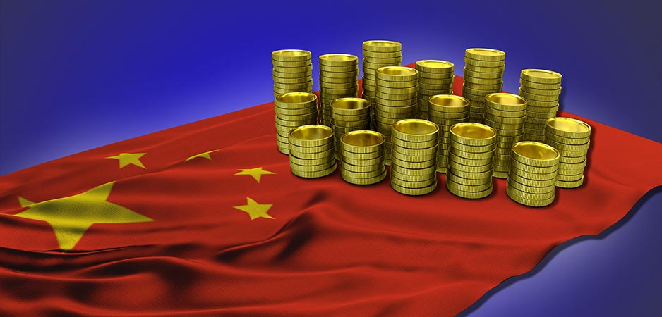
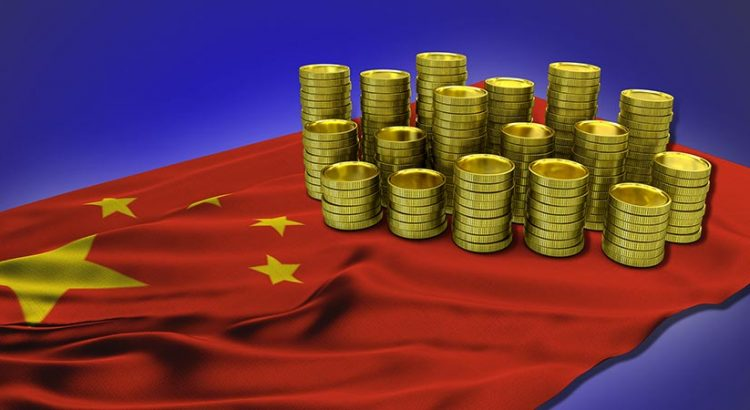
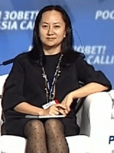
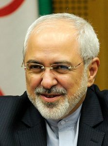

US Imposes New Sanctions on China

The Chinese Foreign Ministry made a statement condemning the possibility of additional sanctions against China.The new sanctions could be implemented against four Chinese corporations that continue to have business dealings with Iran.The protest by China, stems from the virtual event in the Institute of Belarus that was held on November 25th.
It should be noted that Huawei’s chief financial officer, Meng Wanzhou, is in Canada under house arrest in regards to alleged dealings with Iran.She is accused of falsifying information which was provided to HSBC bank.Thus far, Meng has been unsuccessful in her fight against the extradition to the US to face charges of bank and wire fraud.
One of the main speakers at the event is the US government’s special envoy to Iran, Elliot Abrams.He said that the US government intends to blacklist four Russian and Chinese companies for their alleged links to Iran’s missile program.He also said on Friday that the US intends to impose additional sanctions on Iran in the remaining few weeks before the end of the term of the administration of Donald Trump.
However, the question remains if the sanctions would actually last.The newly-elected US President, Joe Biden, claims that he will reverse all the decisions made by Donald Trump in the last 90 days of Trump’s presidency.At the same time, Biden is not going to make it easy for Russia.
Therefore, it is plausible that these sanctions could actually stay in place.Under Trump, the US withdrew from the Iran nuclear agreement in 2018.As a result, Iran started to expand the enriched uranium program.
To note, in the summer of 2019, the Trump administration imposed sanctions on the leader of Iran, Ayatollah Ali Khamenei, Iran’s foreign minister, Mohammad Javad Zarif, and key people in the regime.
Furthermore, China is strongly opposing the new sanctions and believes that the accusations are false.Nevertheless, China has been known to steal trade secrets and circumvent sanctions in the past.The four companies on the list also have business dealings with Russia.It is plausible that the business venturers with Iran are conducted jointly with Russia.
Additionally, Henry Kissinger has been lobbying for China on behalf of the US companies with vested interests in China for decades.Richard Nixon and Henry Kissinger played key roles to empower the Chinese economy via manufacturing relocation to China on behalf of the US conglomerates.
China does not want open confrontation with the US.This week, the Chinese military leadership made a series of statements that China does not want a Cold War with the US.However, the statement is flawed, as China does not have capabilities of an actual war.
The Chinese military does not have real combat experience.The statement is purely based on grandstanding.In reality, for the Chinese economy to have an open feud with the US can be dangerous.The fate of China will be decided by the newly-elected US President, Joe Biden.
[bsa_pro_ad_space id=4]
Share on Facebook Tweet Follow us
Posted On: 2020-11-28T00:00:00
Posted By: Christina Kitova






Content Date: 2020-11-28
Download Date: 2021-07-09
Document ID: L0C04EL4P